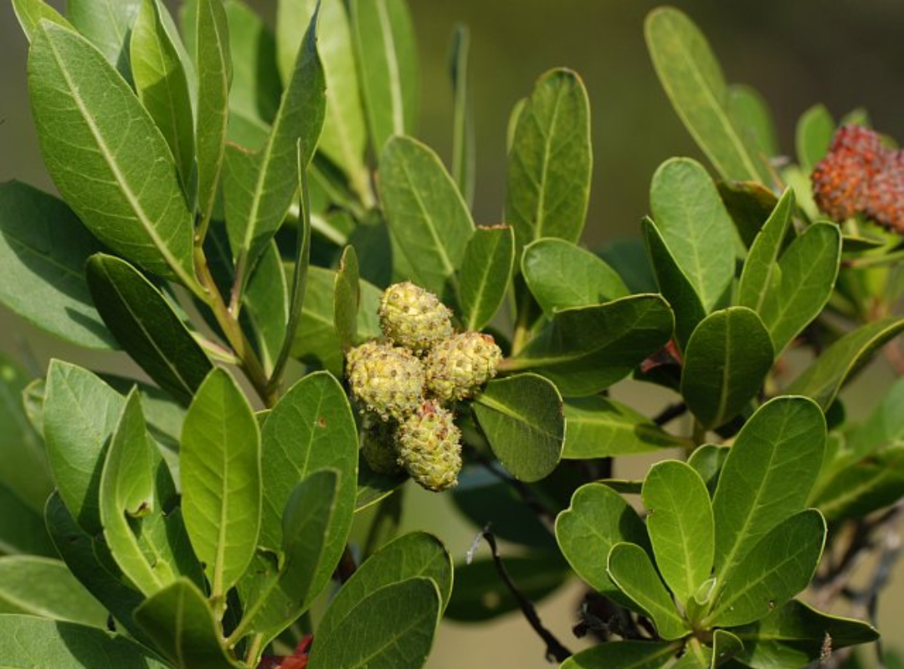
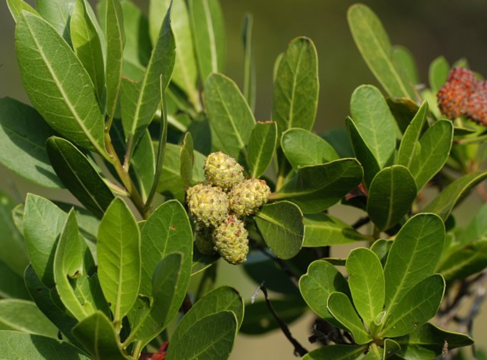

Common Names: Conocarpus, Corynocarpus, Damas (Arabic)
Scientific Name: Conocarpus Lancifolius
Suggested Uses: Shade Trees, Street Trees, Hedging, Topiaries
Where to See: DHA Phase VI Median Islands and Shahrah-e-Faisal Green Belts
 

Native to Somalia, Ethiopia, and Yemen, this tree was introduced in the 2000s to Karachi as a means to quickly increase the city’s green cover. Since then however, it’s remained a source of much controversy. Conocarpus trees can grow up to 40 feet tall locally with older specimens having sizable trunks.
Conocarpus trees are salt, heat, and drought resistant. They are resistant to strong winds and its rather vertical habit allows rows of them to effectively create walls.
We’ve noticed two main types of Conocarpus tree: One with a fine, furrowed bark and the other with a trunk marked by grooves. The latter is much more common to see though both grow in the same way.
Many environmentalists claim Conocarpus trees are sources for pollen allergies and by blocking sea breezes, exacerbate the urban heat island. Others say it releases carbon dioxide and prevents rainfall. It seems that overall there is a great deal of anti-conocarpus sentiment without much basis. Articles read more like opinion pieces and despite our extensive research as authors, we have failed to come across substantiated scientific research that supports these claims.
Perhaps in coastal areas trees like the Badaam, Paras Peepal, or Sea Hibiscus can be grown alternatively. More importantly, we need to increase our mangrove cover with species like the Avicenna Marina and Rhizophora to increase Karachi’s resiliency to cyclones and tidal surges. The Clifton Urban Forest by Masood Lohar is an excellent example of how we can incorporate mangrove trees in our urban environment and build climate resilience. Given that mangrove trees are unrivalled at carbon sequestration, they can be an excellent source of funding as blue-carbon credits can be sold to facilitate the regeneration of mangrove habitats.
Conocarpus trees’ wind breaking effects can perhaps be minimised by mindful pruning. If you shape the tree so that its leaves are not along the trunk but rather all at the top, the Conocarpus would then not form a wall. The wind would easily be able to circulate around its trunk. Consequently, you could form a canopy of sorts. Effectively speaking, this would turn the tree into a lollipop. For streets running East to West this could be an excellent method to retain a canopy while increasing the sea breeze. For North to South streets this method still works but will let in more morning and evening sunlight.
So overall, we believe the Conocarpus tree is not the demon many make it out to be. The opinions of KU’s scientists should be central to discussions around the Conocarpus. Indeed, the future of Karachi is in gradually phasing these trees out in favour of diverse native plantations. Still, the Conocarpus tree may still be a good choice in select locations– like industrial areas– due to its exceptional hardiness.